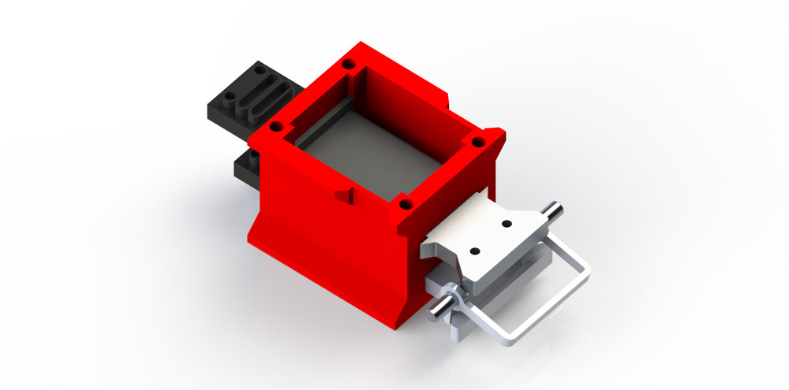
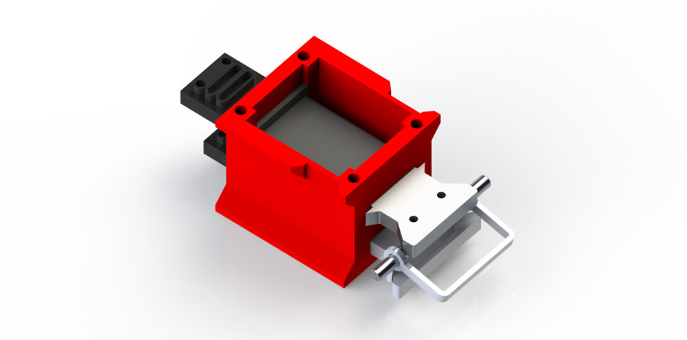

Vancouver BC, Canada
mpg3@sfu.ca, linkedin
Robot Soccer Mechanics Team
Designed to compete in the 2024 robocup small size league. Our team's website: SFU Robot Soccer
I rendered the robot soccer mechanical components in solidworks. I have personally designed or revised many of the mechanical components on the robot, most notably the spiral shaped dribbler assembly, and the horizontal structural plates.
The team's prototyping is done with 3D printing, as it is rapid, and strong enough to do limited testing. To meet our goals, I printed the yellow parts with PETG.


 


Personal Software Projects
Some screenshots of my game development projects. Showcasing a fog of war shader, and robust selection tools. Fully developed gameplay. And finally, a project with my friends, with a limited color palette, and procedural animations.


Class Projects
The first image is a hand soldered digital dice circuit (for the SFU class ENSC 220) with through-hole, and surface mount components. The end result simulates rolling a dice when the capacitive button is pressed.
The second and third images are of an automatic window actuation system controlled by weather forecast (for the SFU classes ENSC 100 and ENSC 105W). The project was completed from the ground up in a small team, with the goal to solve a problem in the world.


Personal Mechanical Projects
These images show some iterations of a very small pocket-watch-like mechanism. A design requirement was that it must be manufactured with 3D printing.